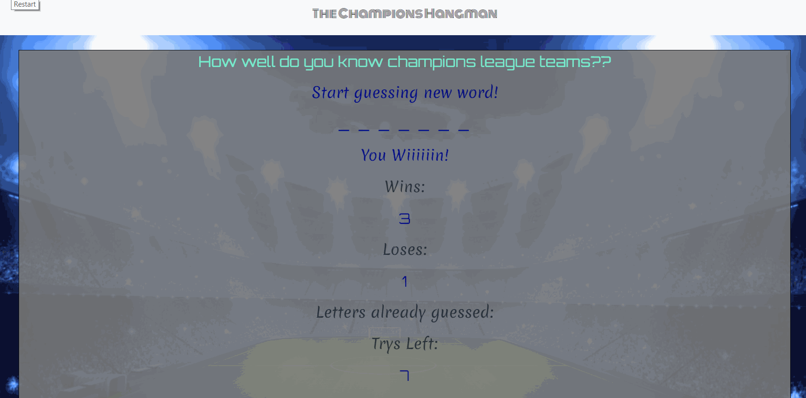

<!-- modals hangman -->

<div class="modal fade bd-example-modal-lg1" tabindex="-1" role="dialog" aria-labelledby="myLargeModalLabel" aria-hidden="true">
    <div class="modal-dialog modal-lg">
        <div class="modal-content">
            <div class="modal-header">
                <h5 class="modal-title" id="exampleModalLabel">Hangman Game</h5>
                <button type="button" class="close" data-dismiss="modal" aria-label="Close">
                    <span aria-hidden="true">&times;</span>
                </button>
            </div>
            <div class="modal-body">
                <div class="container overlayCont">
                    <div class="row">
                        <div class="col col-xl-12 modalHeader">
                            
                        </div>
                    </div>
                    <div class="row">
                        <div class="col col-xl-12 modalHeader">
                            <p>
                                <strong>Description of the game: </strong>This game follows a hangman game structure, in which
                                has seven
                                tries in order to correctly guess
                                the correct letters of the word. If the user was successful, the game logs a win and
                                the game is
                                restarted. However, if the user fails, the game logs a lose
                                and the game is restarted.
                            </p>
                        </div>
                    </div>
                    <div class="row">
                        <div class="col col-xl-12 modalHeader">
                            <p>
                                <strong>Development Description: </strong>Using the powers of front-end development, the HTML,
                                CSS, and
                                Javascript were used to create this game. With the HTML mostly dependent on the vanilla
                                Javascript code,
                                the game is designing in a recursive reset function, in which a random word is picked
                                and goes
                                through a series on conversion steps until it displays on the HTML as empty lines. The
                                game resets
                                when the user reaches either the winning, losing, or out of tries conditions in the
                                code.
                            </p>
                        </div>
                    </div>

                    <div class="row">
                        <div class="col col-xl-12 modalHeader">
                            <p>    <a href="https://fadynaguib96.github.io/Word-Guess-Game/"><button type="button" class="btn btn-dark">Visit
                                    Website</button></a>        
                            <a href="https://github.com/fadynaguib96/Word-Guess-Game"><button type="button" class="btn btn-dark">Visit
                                    Github Repo</button></a></p>
                        
                        </div>

                    </div>

                </div>
            </div>
        </div>
    </div>
</div>


<!-- modal hangman end-->